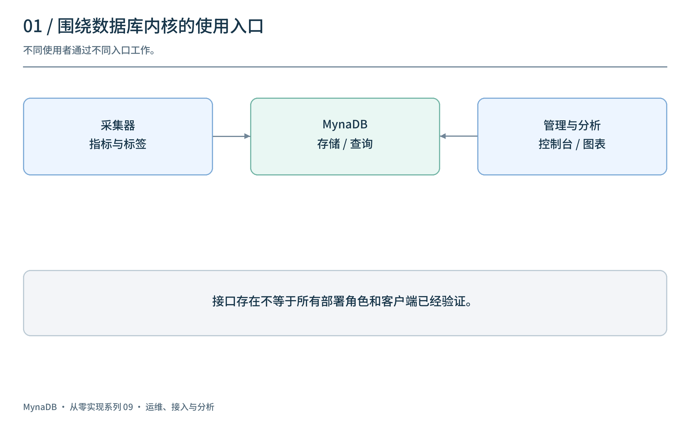
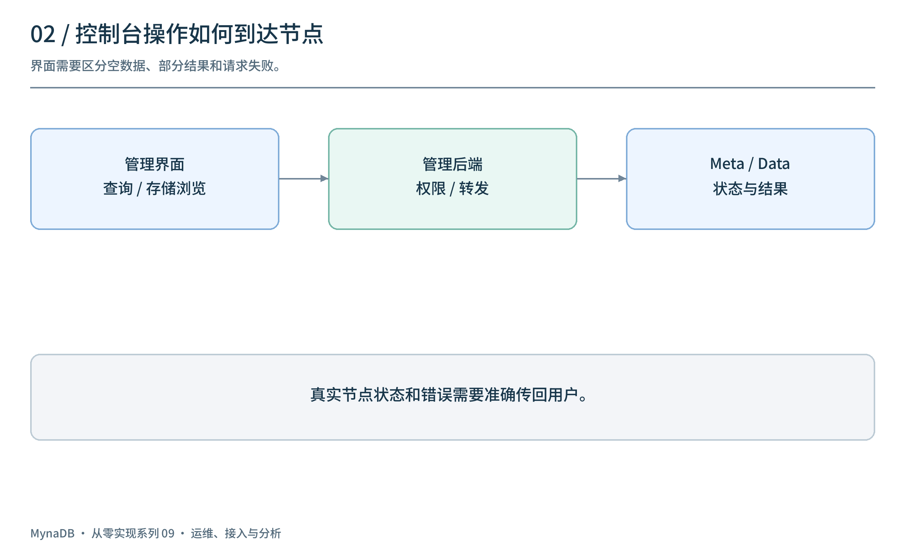
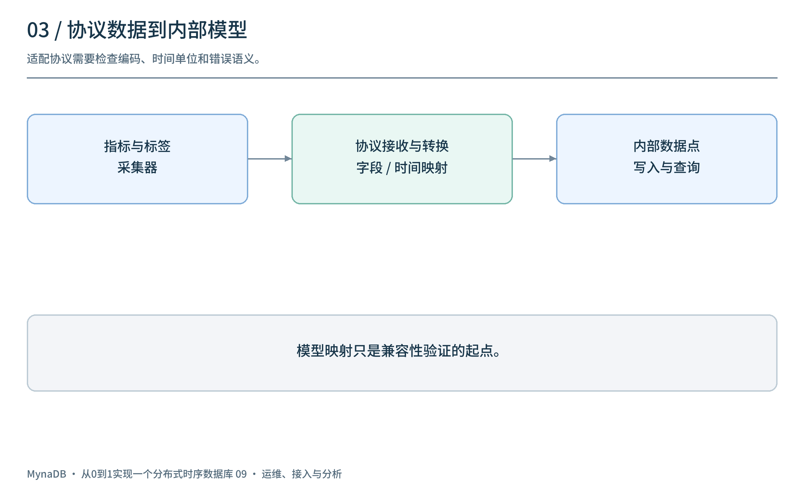
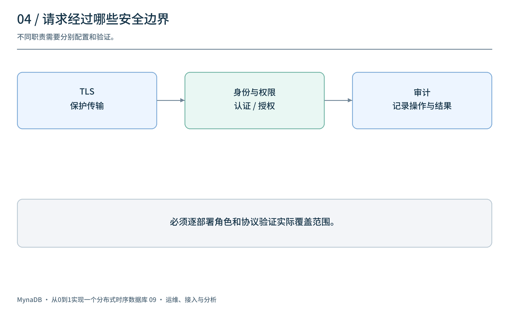
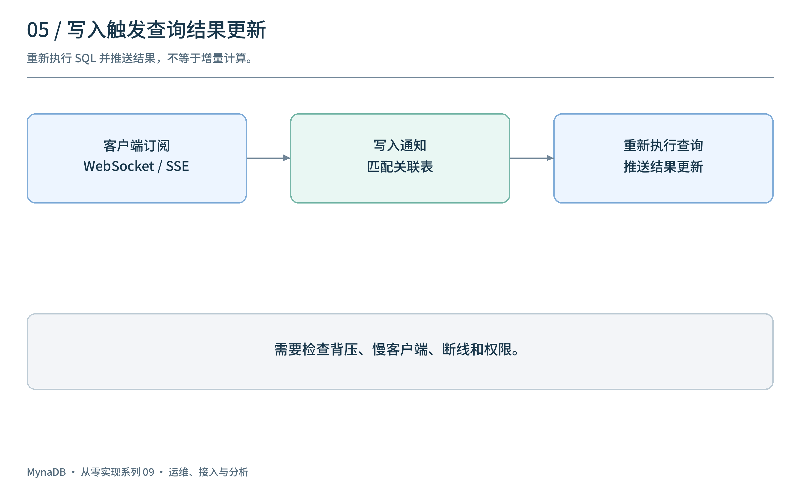
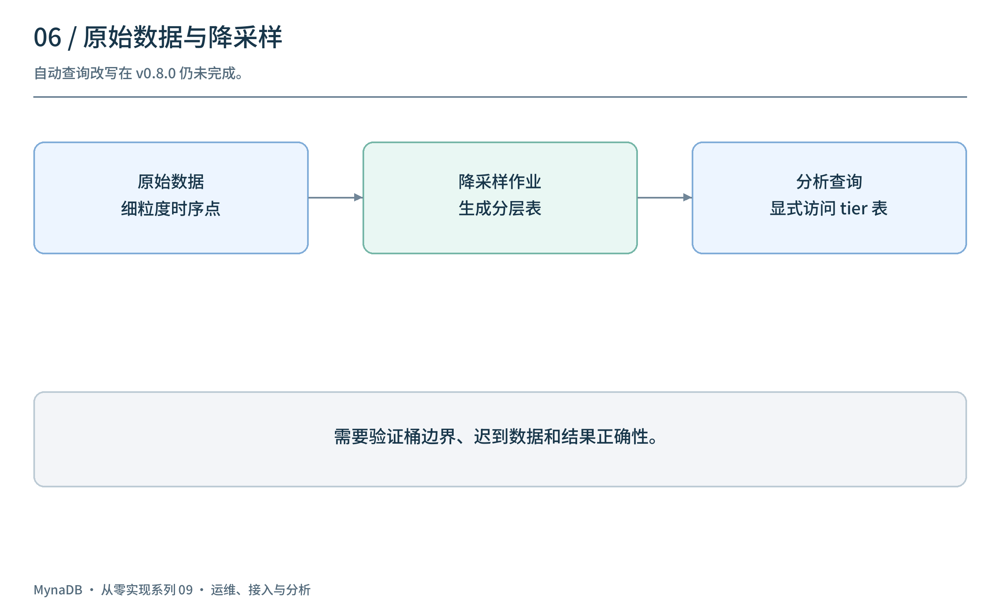

上一篇讨论了集群如何定位表和物理分区。但数据库能保存并查询数据以后，使用者还需要回答另一组问题：集群是否健康？现有采集工具怎样接入？谁有权限访问？历史数据怎样分析？
这一篇以 v0.8.0 / M9 为线索，梳理管理界面、协议、安全和分析能力。接口或模块的存在不等于所有客户端、部署角色和工作负载都已经兼容；下文会分别说明边界。
1. 从数据库内核走向使用入口
M9 阶段增加了 React 管理界面，并扩展协议、安全与分析相关功能。它们围绕同一个数据路径服务不同用户：采集器写入，查询客户端读取，管理员观察和管理节点。

| 使用者 | 关注点 | 相关入口 |
|---|---|---|
| 应用与采集器 | 指标如何写入、时间与标签如何映射 | line protocol、Prometheus remote storage 等 |
| 数据分析者 | 查询、分桶、可视化与订阅 | SQL、InfluxQL 相关路径、Grafana 插件、流式查询 |
| 运维人员 | 节点状态、文件、查询和错误 | Admin Console、指标与追踪 |
| 安全管理员 | 谁能访问什么资源 | 用户、角色、权限、审计与 TLS 配置 |
这些功能的可用性需要逐一检查配置、部署角色和实际版本。特别是 v0.8.0 的 Router 模式中 MySQL 服务仍未实现；单机支持某个接口不能自动推广到集群入口。
2. 控制台不仅是“多一个页面”
控制台把分散的信息组织起来：查询、存储浏览、节点状态、指标和事件。对排查问题的人来说，重要的不只是能否显示数据，还包括显示的是哪个节点、哪个时间点、请求失败时是否明确提示。

例如查看一张表：管理界面请求后端，后端可能需要查询 Meta 或转发到 Data 节点，最后将结果返回页面。若节点不可达，应区分“没有数据”和“未能获取数据”；如果只有部分节点返回，也不能无提示地展示为完整集群结果。
控制台还提供 SQL 查询和存储浏览。它们需要与权限、输入限制、错误提示和审计配合；能够浏览某个对象并不代表用户有权修改或删除它。React 前端需要单独构建，历史版本的前端与后续版本不可直接互换。
3. 协议接入：先理解数据模型，再谈兼容
以 Prometheus remote write 为例：采集器发送指标名、标签、值和时间戳，接收端需要将它们映射到数据库的数据模型。

指标名 → measurement / 表
labels → tags
value → 数值字段
time → 时间列，按协议处理单位
这个映射是理解数据流的起点，而不是完整兼容性证明。还要测试压缩和编码、时间戳精度、不同指标类型、标签冲突、重复写入、错误返回以及客户端重试。
v0.8.0 引入 Prometheus remote read/write 处理与 InfluxQL 解析/转换路径，也提供 Grafana 数据源插件源码。插件源码存在并不意味着已经签名、发布到插件目录或通过所有 Grafana 版本验证；Grafana、采集器和服务器应按具体版本做端到端测试。OTLP 原生接入是在下一里程碑引入的，不属于 v0.8.0。
4. 认证、授权、TLS 和审计各管什么？
数据库暴露更多入口后，需要将安全职责拆开：

- TLS 保护传输通道；证书配置和客户端验证需根据部署方式检查。
- 认证 判断请求者身份。
- 授权 根据角色和资源判断是否允许操作。
- 审计 记录需要追踪的操作及结果。
v0.8.0 引入了用户、角色、自定义权限、查询隔离和审计相关实现，也包含服务端 TLS 支持。实际覆盖哪些 HTTP、Flight、MySQL 或集群路径，取决于部署角色与配置；需要逐接口验证，不能因某个入口开启 TLS 就假设所有节点通信都已加密。
安全示例还应检查默认用户、密码存放、日志敏感信息和失败处理。权限被拒绝时应返回清晰错误，不能把错误转换成空结果。
5. 流式查询：推送更新不一定是增量计算
轮询是客户端定时发起 SQL；流式订阅则让客户端通过 WebSocket 或 SSE 保持连接，由服务端推送初始结果和后续更新。

v0.8.0 的流式查询管理器围绕订阅 SQL、关联表的写入通知和重新执行查询组织更新。重新执行查询并推送结果，与只计算并推送变化的增量计算不同。 订阅数量多、写入频繁或查询耗时时，需要关注合并通知、背压、慢客户端、资源上限和断线恢复。
还应确认订阅建立时的身份与权限如何在后续执行中保持，以及连接断开或权限变化时如何处理。以上是设计与测试检查项，不代表所有场景已由该标签验证。
6. 时序分析与降采样的边界
时序数据常见需求包括时间分桶、聚合、历史数据降采样、地理分析和预测。M9 包含降采样作业与分层表、压缩策略、地理函数和预测相关代码；这些组件各有不同的成熟度。

例如，原始秒级数据可以按策略生成较粗粒度的聚合表，以减少长期历史查询的数据量。但需要规定桶边界、空桶、迟到数据、聚合正确性与覆盖时间范围。
v0.8.0 的自动降采样查询改写器会记录计划使用的 tier，但返回的是未修改的查询计划。不能承诺原表 SQL 会自动切换到降采样表；需要显式查询已生成的 tier 表，并验证作业结果。独立的 continuous aggregate 刷新执行器同样仍是占位。地理函数不等于完整 PostGIS 兼容，预测模型的存在也不等于预测准确。
7. 接入和运维如何验证？
| 场景 | 建议验证 |
|---|---|
| Prometheus / Grafana 接入 | 指标、标签、时间单位、响应格式与真实客户端版本 |
| 控制台节点不可达 | 错误、部分结果和空结果是否区分 |
| 不同用户访问同一表 | 认证、授权拒绝、审计及跨租户隔离 |
| TLS 在不同部署角色启用 | 每个对外与节点间连接的实际配置和证书 |
| 高写入频率的流式订阅 | 重查成本、背压、慢客户端和断线行为 |
| 降采样与迟到数据 | 桶边界、聚合正确性与表覆盖范围 |
这些是建议的测试场景，并非本文已经执行的兼容性或性能测试。
8. 回看这一阶段
M9 扩展了“如何使用数据库”：控制台让状态可观察，协议适配连接已有工具，安全机制划定访问边界，分析能力帮助处理时序数据。每一个入口都需要独立的配置、错误语义和真实客户端验证。
下一篇将讨论 v0.9.0 的正确性修复、OTLP 接入与 Iceberg 初版，以及后续补丁如何继续修复实际查询和界面问题。
项目源码：panbooks/mynadb · v0.8.0 源码 · 中文文档。